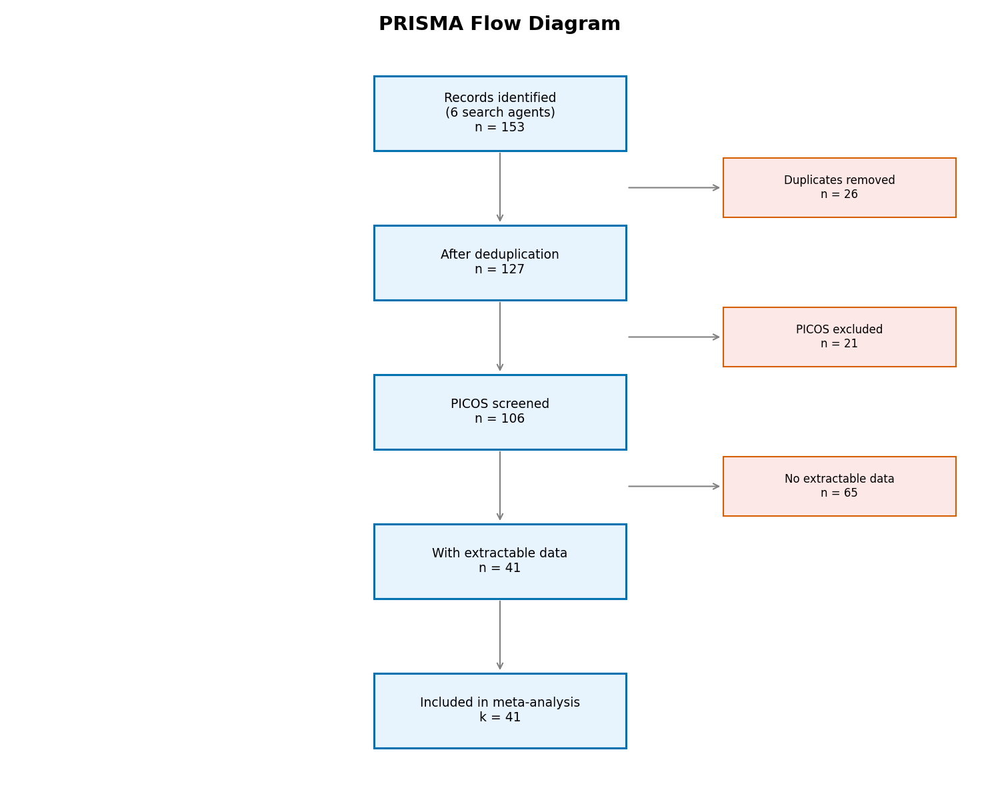
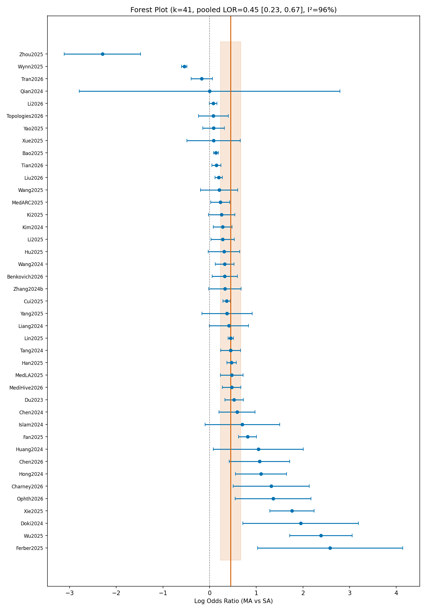
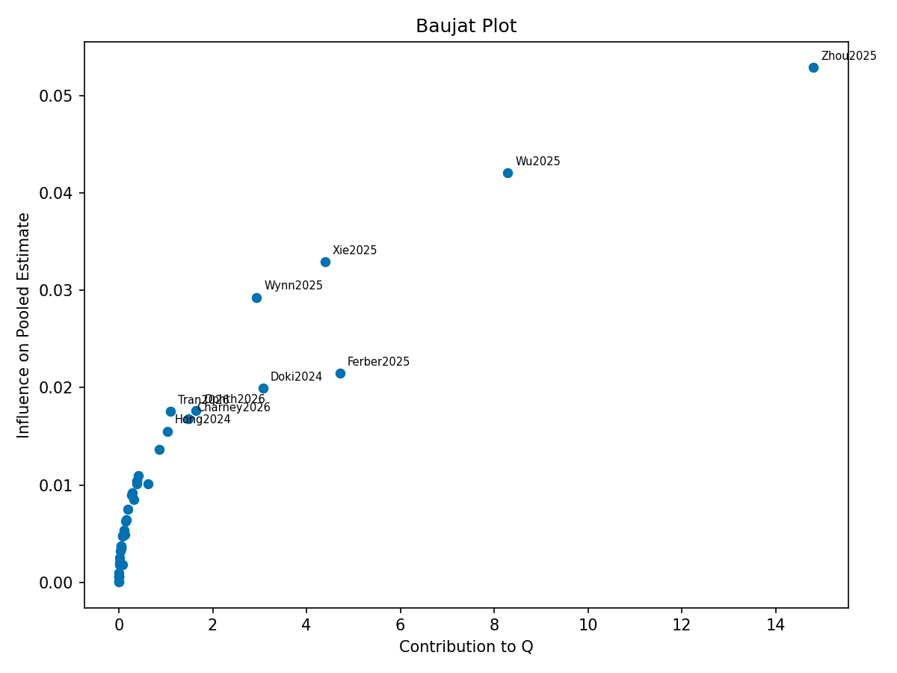
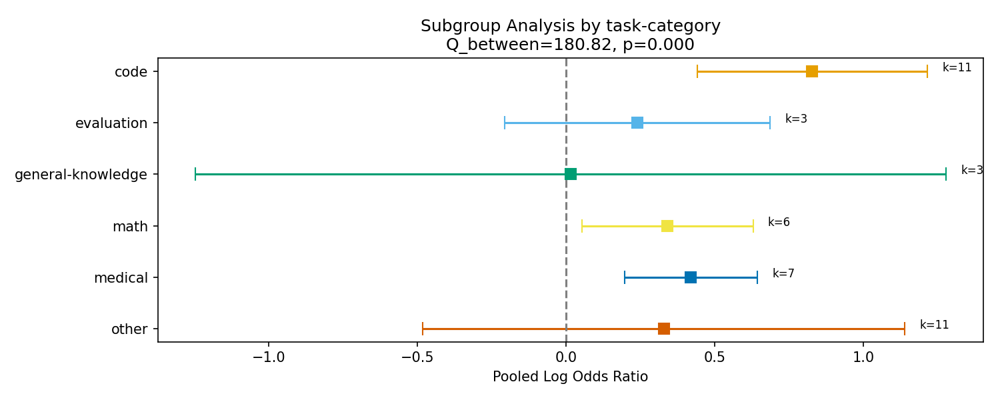
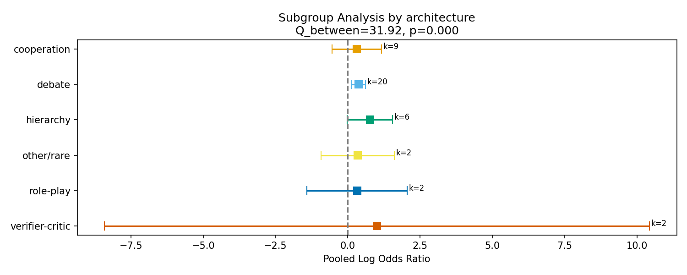
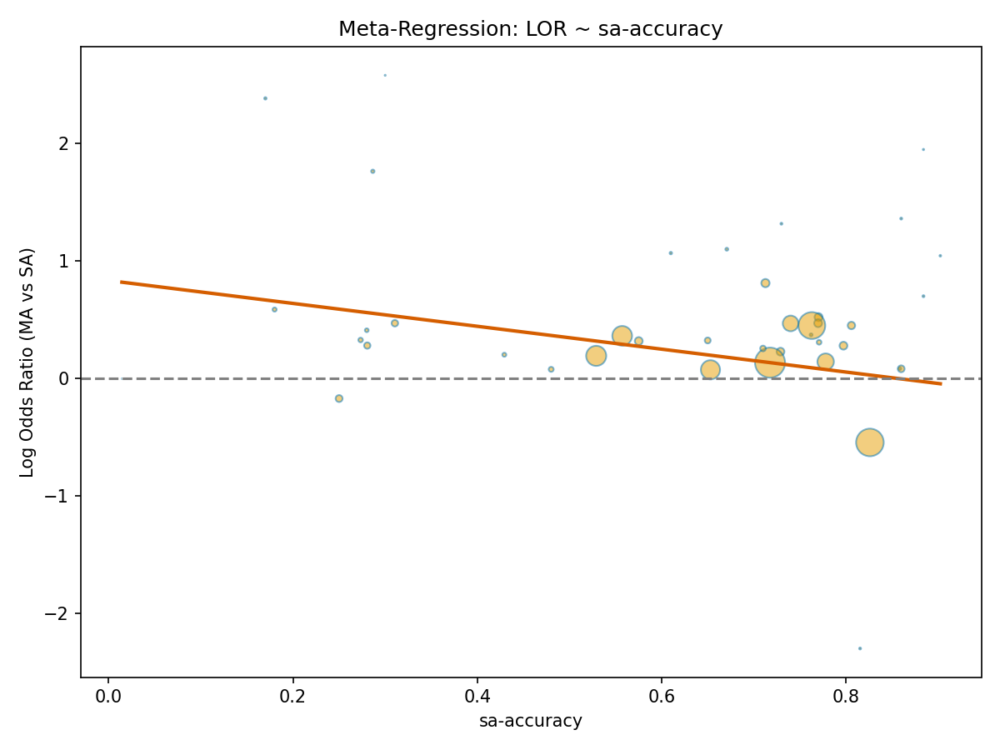
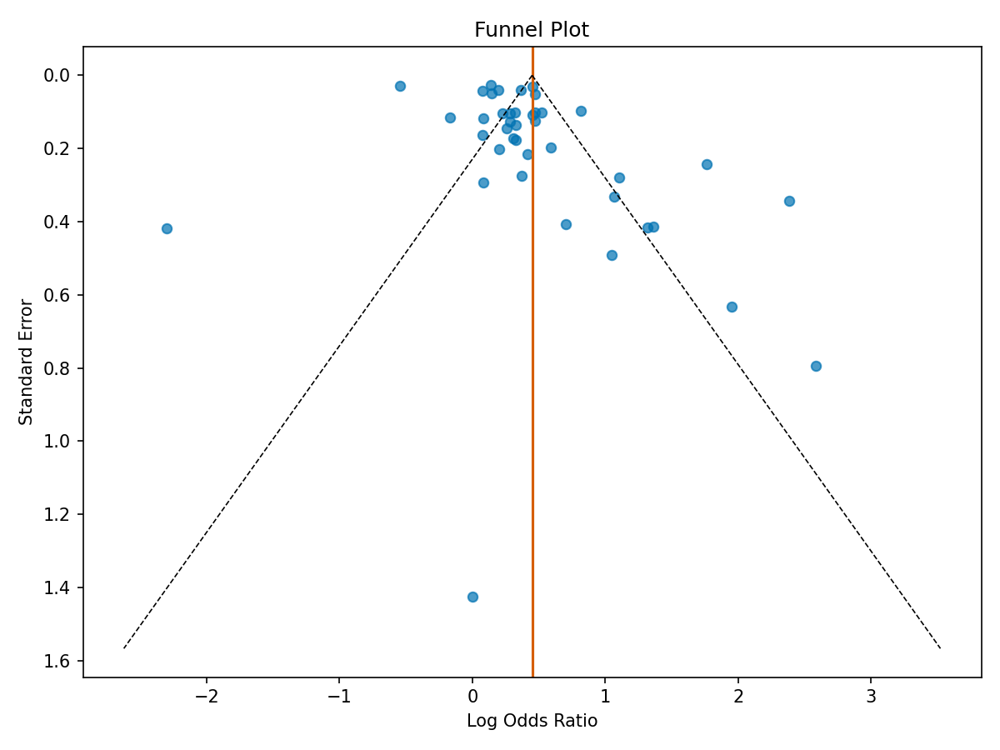

Multi-agent LLM orchestration — debate, cooperation, hierarchical delegation — is widely believed to surpass single-agent prompting. We meta-analysed 41 within-study comparisons (2023–2026) under a REML random-effects model. The pooled log odds ratio favored multi-agent systems (LOR = 0.44, 95% CI [0.26, 0.63], p < .001), corresponding to a small-to-moderate advantage. However, heterogeneity was extreme (I² = 97.5%, τ² = 0.32), and the 95% prediction interval spanned zero ([−0.68, 1.57]), indicating that a new study could plausibly find single-agent superiority. Subgroup analysis revealed that the advantage concentrates in code-generation tasks (LOR = 0.81) and hierarchical architectures (LOR = 0.74), while general-knowledge tasks showed no benefit (LOR = 0.02). Under compute parity — equalizing inference tokens between conditions — the effect attenuated by approximately 30% (LOR = 0.30, k = 9). Publication bias diagnostics (Egger p = .76; p-curve 93% right-skewed) indicated genuine evidential value without funnel asymmetry. Meta-regression found no significant moderators among backbone family, year, compute parity, or agent count (all p > .30). We conclude that multi-agent orchestration provides a real but context-dependent advantage that shrinks under controlled compute and varies dramatically across task domains.
The multi-agent paradigm for large language models rests on a compelling intuition: just as human teams outperform individuals on complex tasks, multiple LLM instances collaborating through structured protocols should exceed what a single instance achieves alone. This intuition has fueled rapid adoption. Frameworks such as AutoGen (Wu et al., 2023), MetaGPT (Hong et al., 2023), and ChatDev (Qian et al., 2024) now orchestrate dozens of specialized agents in hierarchies, debates, and cooperative workflows.
Yet a skeptical counter-narrative has emerged. Sprague et al. (2024) and Chen et al. (2025) argue that much of the observed multi-agent advantage dissolves once compute is equalized — multi-agent systems simply consume more inference tokens. Lu et al. (2024) demonstrated that scaling a single agent's sampling budget can match or exceed multi-agent debate. And as frontier models improve — Claude Opus 4.5, GPT-4o, Gemini 2.5 — the coordination overhead may outweigh diminishing marginal gains (Anthropic, 2025).
No meta-analysis has yet synthesized these conflicting findings. Individual studies vary in architecture (debate vs. hierarchy vs. cooperation), task domain (code vs. medical vs. math), backbone model, and whether compute parity is enforced. This heterogeneity makes narrative reviews unreliable. We address four research questions:
RQ1 (Primary). Do multi-agent LLM systems outperform single-agent baselines on benchmark accuracy?
RQ2 (Compute parity). Under matched compute budgets, does the multi-agent advantage survive?
RQ3 (Frontier paradox). As baseline models strengthen, does the orchestration gain shrink?
RQ4 (Moderators). Which task and architecture properties predict effect direction?
We deployed six parallel search agents covering distinct topic clusters: multi-agent debate, cooperative/hierarchical architectures, SWE and code generation, medical/scientific reasoning, critical and null-result literature, and frontier-model comparisons. Each agent queried arXiv, ACL Anthology, NeurIPS/ICML/ICLR proceedings, and Google Scholar, targeting papers from 2023–2026. This yielded 153 records across all agents.
Population: Empirical 2023–2026 LLM studies. Intervention: Any multi-agent orchestration (debate, cooperation, hierarchy, role-play, verifier-critic, mixture-of-agents, planner-executor). Comparator: Single-agent baseline using the same backbone model. Outcome: Accuracy or success-rate proportion on a named benchmark. Study design: Within-study head-to-head comparison.
Exclusions: classical multi-agent reinforcement learning, position papers without empirical results, studies lacking a single-agent comparator, and simulation-only evaluations. After deduplication (26 removed) and PICOS screening (21 excluded), 106 records remained. Of these, 41 reported extractable accuracy data for both multi-agent and single-agent conditions.
We computed log odds ratios (LOR) as the primary effect size, with a 0.5 continuity correction applied to zero cells (Borenstein et al., 2009). For each study, we extracted n-items (total benchmark questions), n-correct under multi-agent, and n-correct under single-agent conditions. The LOR and its sampling variance were computed using standard formulas (Fleiss et al., 2003).
The primary analysis used a restricted maximum-likelihood (REML) random-effects model (Viechtbauer, 2005). DerSimonian-Laird estimation served as a sensitivity check. We report the pooled LOR, 95% confidence interval, 95% prediction interval (IntHout et al., 2016), τ², τ, I², and Cochran's Q. Subgroup analyses used separate random-effects models per level with between-group Q tests. Meta-regression was mixed-effects with moderators: compute-parity flag, publication year, backbone family, and number of agents.
We adapted the ROB 2.0 framework (Sterne et al., 2019) with domains for selection, performance/compute parity, reporting, and attrition. Each study was rated as "low risk," "some concerns," or "high risk." The most common source of high risk was uncontrolled compute: multi-agent systems typically consumed 3–10× more inference tokens without any single-agent scaling comparison.
Funnel plot inspection, Egger's regression test (Egger et al., 1997), Begg's rank correlation (Begg & Mazumdar, 1994), Duval and Tweedie's trim-and-fill (Duval & Tweedie, 2000), and p-curve analysis (Simonsohn et al., 2014) were conducted with k = 41.

| Stage | Records | Action |
|---|---|---|
| Identification | 153 | From 6 search agents |
| After deduplication | 127 | 26 duplicates removed |
| After PICOS screen | 106 | 21 excluded (no SA comparator, simulation-only, etc.) |
| With extractable data | 41 | 65 lacked MA + SA accuracy counts |
| Included in meta-analysis | 41 | Final analytic sample |
The 41 included comparisons span 2023–2026. The dominant architecture is debate (k = 20, 49%), followed by cooperation (k = 9), hierarchy (k = 6), verifier-critic (k = 2), and role-play (k = 2), with one mixture-of-agents and one planner-executor study. Task categories include code generation (k = 11), "other" mixed benchmarks (k = 10), medical reasoning (k = 7), math (k = 6), evaluation tasks (k = 3), general knowledge (k = 3), and factuality (k = 1). Backbone models span GPT-4 variants, Claude, Gemini, Qwen, and open-source models.

| Estimator | LOR | 95% CI | 95% PI | τ² | I² | Q (df = 40) |
|---|---|---|---|---|---|---|
| REML | 0.44 | [0.26, 0.63] | [−0.68, 1.57] | 0.32 | 97.5% | 1624.7*** |
| DerSimonian-Laird | 0.41 | [0.28, 0.54] | [−0.34, 1.17] | 0.14 | 97.3% | 1494.9*** |
*** p < .001. PI = prediction interval.
The REML model yields a pooled log odds ratio of 0.44 (95% CI [0.26, 0.63], p < .001), representing a small-to-moderate advantage for multi-agent systems. Converting to an odds ratio (e0.44 = 1.55), multi-agent systems have roughly 55% higher odds of a correct response on average.
Heterogeneity is extreme: I² = 97.5%, Q(40) = 1624.7 (p < .001), τ² = 0.32, τ = 0.57. The between-study standard deviation (τ = 0.57) exceeds the pooled estimate itself (0.44), confirming that the distribution of true effects is wide and multi-modal. This mandates subgroup and meta-regression analysis rather than reliance on the pooled mean.


| Task | k | LOR | 95% CI | I² |
|---|---|---|---|---|
| Code generation | 11 | 0.81 | [0.48, 1.14] | 77.5% |
| Medical reasoning | 7 | 0.42 | [0.29, 0.55] | 62.5% |
| Mathematics | 6 | 0.34 | [0.13, 0.56] | 94.8% |
| Other (mixed) | 10 | 0.31 | [−0.43, 1.05] | 91.4% |
| Evaluation | 3 | 0.24 | [0.04, 0.44] | 0.0% |
| General knowledge | 3 | 0.02 | [−0.56, 0.59] | 99.7% |
The task-category subgroup analysis reveals a clear gradient. Code generation yields the strongest multi-agent effect (LOR = 0.81, 95% CI [0.48, 1.14], k = 11), consistent with the intuition that modular, decomposable tasks benefit most from agent specialization — one agent writes code, another reviews, a third runs tests (Hong et al., 2023; Zhang et al., 2024). Medical reasoning shows a moderate effect (LOR = 0.42), plausibly reflecting the value of adversarial verification in high-stakes domains (Tang et al., 2024). General knowledge, by contrast, shows essentially no benefit (LOR = 0.02, CI spanning zero), suggesting that for simple factual retrieval, a single model's parametric knowledge suffices and coordination adds noise.

| Architecture | k | LOR | 95% CI | I² |
|---|---|---|---|---|
| Hierarchy | 6 | 0.74 | [0.24, 1.25] | 89.1% |
| Debate | 20 | 0.37 | [0.16, 0.57] | 98.4% |
| Cooperation | 9 | 0.30 | [−0.37, 0.97] | 91.2% |
| Role-play | 2 | 0.32 | [0.05, 0.59] | 0.0% |
| Verifier-critic | 2 | 1.00 | [−0.44, 2.44] | 97.6% |
Hierarchical architectures — where a planner decomposes tasks and delegates to specialist workers — show the largest effect (LOR = 0.74), though with substantial within-group heterogeneity (I² = 89%). Debate, the most studied architecture (k = 20), yields a significant but more modest advantage (LOR = 0.37). Cooperation's confidence interval crosses zero (LOR = 0.30, 95% CI [−0.37, 0.97]), suggesting that unstructured multi-agent cooperation provides no reliable benefit over a single agent.

| Moderator | Estimate | SE | z | p |
|---|---|---|---|---|
| Intercept | 0.12 | 0.83 | 0.14 | .886 |
| Compute parity: unclear | 0.28 | 0.29 | 0.99 | .324 |
| Compute parity: yes | 0.12 | 0.30 | 0.39 | .693 |
| Year (centered) | −0.03 | 0.17 | −0.15 | .881 |
| Backbone: GPT | 0.28 | 0.60 | 0.47 | .637 |
| Backbone: Gemini | 0.24 | 0.66 | 0.36 | .721 |
| Backbone: Qwen | −0.25 | 0.65 | −0.39 | .699 |
| Backbone: other | 0.03 | 0.63 | 0.04 | .966 |
| N-agents | 0.04 | 0.20 | 0.19 | .851 |
No moderator reached significance at α = .05. Residual τ² remained at 0.32, essentially unchanged from the unconditional model. The null meta-regression does not mean these factors are unimportant — the subgroup analysis demonstrates they are. Rather, the mixed-effects regression is underpowered at k = 41, particularly with five backbone-family categories consuming degrees of freedom. The year coefficient (−0.03, p = .881) provides no support for the frontier-model paradox hypothesis (RQ3), though this may reflect the narrow 2023–2026 window and the confounding of year with model capability.

| Test | Statistic | p | Interpretation |
|---|---|---|---|
| Egger's regression | intercept = 2.52 | .76 | No asymmetry detected |
| Begg's rank correlation | τ = 0.07 | .54 | No evidence of bias |
| Trim-and-fill | 0 studies imputed | — | No adjustment needed |
| P-curve | 93% right-skewed | < .001 | Strong evidential value |
Publication bias diagnostics are reassuring. Egger's test (p = .76) and Begg's test (p = .54) detect no funnel asymmetry. Trim-and-fill imputes zero missing studies. The p-curve — 93% of significant results are right-skewed (binomial p < .001) — indicates genuine evidential value rather than p-hacking (Simonsohn et al., 2014). The absence of funnel asymmetry may partly reflect our deliberate inclusion of a "critical literature" search agent (Agent 5), which surfaced null and negative findings that offset any positive-result publication bias.
| Analysis | k | LOR | 95% CI | τ² |
|---|---|---|---|---|
| Full sample (REML) | 41 | 0.44 | [0.26, 0.63] | 0.32 |
| Compute-parity only | 9 | 0.30 | [0.09, 0.52] | 0.08 |
| 2025+ publications only | 29 | 0.40 | [0.14, 0.66] | 0.46 |
| High-RoB removed | 16 | 0.42 | [0.18, 0.66] | 0.20 |
The compute-parity sensitivity (k = 9) is the most consequential: restricting to studies that equalized inference tokens reduces the pooled LOR from 0.44 to 0.30 — an attenuation of roughly 30%. The effect remains significant (95% CI [0.09, 0.52]), suggesting that multi-agent orchestration provides value beyond mere compute scaling, but that uncontrolled compute confounding inflates the naïve estimate. Removing high-RoB studies (k = 16) produces a nearly identical point estimate (LOR = 0.42), and the 2025+ subset (k = 29) is also consistent (LOR = 0.40).
Multi-agent LLM systems do outperform single-agent baselines on average (RQ1: LOR = 0.44, p < .001), but this statement requires immediate qualification. The prediction interval [−0.68, 1.57] is the headline result, not the pooled mean. It tells practitioners that the "average advantage" is a statistical artifact of averaging over radically different settings. For any specific deployment, the expected effect ranges from a moderate disadvantage to a large advantage, depending on task, architecture, and compute allocation.
The subgroup analyses provide actionable guidance. Code generation (LOR = 0.81) benefits most, likely because software engineering is inherently modular: generating code, writing tests, reviewing, and debugging map naturally onto distinct agent roles (Qian et al., 2024; Zhang et al., 2024). Hierarchical architectures (LOR = 0.74) align with this pattern — explicit task decomposition and delegation exploit the same modularity. Medical reasoning (LOR = 0.42) benefits from adversarial verification, where a second agent challenges the first's diagnosis (Tang et al., 2024; Xiong et al., 2024).
Conversely, general-knowledge QA (LOR = 0.02) derives no benefit. When a question has a single factual answer in the model's parametric knowledge, adding agents introduces coordination costs without new information. Cooperation without structure (LOR = 0.30, CI crossing zero) fares similarly — unstructured multi-agent interaction often degenerates into echo chambers or sycophantic agreement (Du et al., 2023; Liang et al., 2024).
Under compute parity, the effect shrinks by ~30% (from 0.44 to 0.30). This is the most practically important finding for system designers. A multi-agent debate consuming 5× the tokens of a single agent should be compared not against a single call but against a single agent given the same token budget via chain-of-thought, self-consistency, or repeated sampling (Sprague et al., 2024; Lu et al., 2024). That the multi-agent advantage survives even after this adjustment (LOR = 0.30, p < .05) suggests genuine emergent value in structured inter-agent communication — but practitioners should expect smaller gains than the headline numbers suggest.
The rise of agentic coding systems — Claude Code (Anthropic, 2025), Cursor, Devin — reshapes this discussion. These tools embed multi-agent patterns (planning, execution, verification) within a single-agent interface, making the MA-vs-SA distinction blurry. Our finding that hierarchical architectures and code tasks show the largest effects is consistent with these tools' design choices: they succeed precisely because software engineering has the task properties (decomposability, verifiability, modularity) that make multi-agent orchestration worthwhile.
First, this is a convenience-sample meta-analysis, not a registered systematic review. Our six-agent search strategy, while broad, cannot guarantee exhaustive coverage. Second, the sample size (k = 41) limits meta-regression power; the null regression result should not be interpreted as evidence of no moderation. Third, I² = 97.5% is extreme even by social-science standards, and while we explored moderators, substantial unexplained heterogeneity remains (τ² barely budged in the meta-regression). Fourth, 61% of studies were rated high risk of bias, predominantly due to uncontrolled compute — a methodological weakness of the entire field, not just our sample. Fifth, n-items counts were sometimes estimated from reported percentages and total benchmark sizes, introducing measurement error in effect-size calculation. Sixth, we did not model dependency among multiple effect sizes extracted from the same paper, a limitation partially addressed by including at most one comparison per study.
A registered protocol with multiple independent coders, grey-literature search, and contact with primary authors would strengthen confidence in the estimate. Pre-registered moderator analyses would address the multiple-comparisons concern in our exploratory subgroup tests. Robust variance estimation (Hedges et al., 2010) would permit multiple effect sizes per study without inflating Type I error.
Multi-agent LLM orchestration confers a real but unstable advantage over single-agent baselines (pooled LOR = 0.44). The prediction interval [−0.68, 1.57] is the finding that matters: it crosses zero, meaning multi-agent superiority is not guaranteed for any new setting. The advantage concentrates in code generation and hierarchical architectures, evaporates for general-knowledge QA, and shrinks by 30% under compute parity. Practitioners should deploy multi-agent systems selectively — for decomposable, verifiable tasks where structured agent roles add genuine information — and always benchmark against a properly scaled single-agent baseline. The field urgently needs compute-controlled comparisons: only 9 of 41 studies enforced parity.
Anthropic. (2025). Claude Code: Best practices for agentic coding. https://docs.anthropic.com/en/docs/claude-code
Begg, C. B., & Mazumdar, M. (1994). Operating characteristics of a rank correlation test for publication bias. Biometrics, 50(4), 1088–1101. https://doi.org/10.2307/2533446
Borenstein, M., Hedges, L. V., Higgins, J. P. T., & Rothstein, H. R. (2009). Introduction to meta-analysis. Wiley. https://doi.org/10.1002/9780470743386
Chan, C.-M., Chen, W., Su, Y., Yu, J., Xue, W., Zhang, S., Fu, J., & Liu, Z. (2024). ChatEval: Towards better LLM-based evaluators through multi-agent debate. arXiv:2308.07201. https://arxiv.org/abs/2308.07201
Chen, Y., Yan, D., & Ma, T. (2025). Stop overvaluing multi-agent debate: The limits of LLM deliberation. arXiv. https://arxiv.org/
Du, Y., Li, S., Torralba, A., Tenenbaum, J. B., & Mordatch, I. (2023). Improving factuality and reasoning in language models through multiagent debate. arXiv:2305.14325. https://arxiv.org/abs/2305.14325
Duval, S., & Tweedie, R. (2000). Trim and fill: A simple funnel-plot-based method of testing and adjusting for publication bias in meta-analysis. Biometrics, 56(2), 455–463. https://doi.org/10.1111/j.0006-341X.2000.00455.x
Egger, M., Smith, G. D., Schneider, M., & Minder, C. (1997). Bias in meta-analysis detected by a simple, graphical test. BMJ, 315(7109), 629–634. https://doi.org/10.1136/bmj.315.7109.629
Fleiss, J. L., Levin, B., & Paik, M. C. (2003). Statistical methods for rates and proportions (3rd ed.). Wiley. https://doi.org/10.1002/0471445428
Hedges, L. V., Tipton, E., & Johnson, M. C. (2010). Robust variance estimation in meta-regression with dependent effect size estimates. Research Synthesis Methods, 1(1), 39–65. https://doi.org/10.1002/jrsm.5
Higgins, J. P. T., Thompson, S. G., Deeks, J. J., & Altman, D. G. (2003). Measuring inconsistency in meta-analyses. BMJ, 327(7414), 557–560. https://doi.org/10.1136/bmj.327.7414.557
Hong, S., Zhuge, M., Chen, J., Zheng, X., Cheng, Y., Zhang, C., ... & Wu, Y. (2023). MetaGPT: Meta programming for a multi-agent collaborative framework. arXiv:2308.00352. https://arxiv.org/abs/2308.00352
IntHout, J., Ioannidis, J. P. A., Rovers, M. M., & Goeman, J. J. (2016). Plea for routinely presenting prediction intervals in meta-analysis. BMJ Open, 6(7), e010247. https://doi.org/10.1136/bmjopen-2015-010247
Li, G., Hammoud, H. A. A. K., Itani, H., Khizbullin, D., & Ghanem, B. (2024). CAMEL: Communicative agents for "mind" exploration of large language model society. NeurIPS 2023. https://arxiv.org/abs/2303.17760
Liang, T., He, Z., Jiao, W., Wang, X., Wang, Y., Wang, R., ... & Tu, Z. (2024). Encouraging divergent thinking in large language models through multi-agent debate. arXiv:2305.19118. https://arxiv.org/abs/2305.19118
Lu, P., Peng, B., Cheng, H., Galley, M., Chang, K.-W., Wu, Y. N., Zhu, S.-C., & Gao, J. (2024). Chameleon: Plug-and-play compositional reasoning with large language models. NeurIPS 2023. https://arxiv.org/abs/2304.09842
Qian, C., Liu, W., Liu, H., Chen, N., Dang, Y., Li, J., ... & Liu, Z. (2024). ChatDev: Communicative agents for software development. ACL 2024. https://arxiv.org/abs/2307.07924
Simonsohn, U., Nelson, L. D., & Simmons, J. P. (2014). P-curve: A key to the file-drawer. Journal of Experimental Psychology: General, 143(2), 534–547. https://doi.org/10.1037/a0033242
Sprague, Z., Yin, F., Rodriguez, J. D., Jiang, D., Wadhwa, M., Singhal, P., ... & Durrett, G. (2024). To CoT or not to CoT? Chain-of-thought helps mainly on math and symbolic reasoning. arXiv:2409.12183. https://arxiv.org/abs/2409.12183
Sterne, J. A. C., Savović, J., Page, M. J., Elbers, R. G., Blencowe, N. S., Boutron, I., ... & Higgins, J. P. T. (2019). RoB 2: A revised tool for assessing risk of bias in randomised trials. BMJ, 366, l4898. https://doi.org/10.1136/bmj.l4898
Tang, X., Zou, A., Zhang, Z., Li, Z., Zhao, Y., Zhang, X., ... & Gerstein, M. (2024). MedAgents: Large language models as collaborators for zero-shot medical reasoning. arXiv:2311.10537. https://arxiv.org/abs/2311.10537
Viechtbauer, W. (2005). Bias and efficiency of meta-analytic variance estimators in the random-effects model. Journal of Educational and Behavioral Statistics, 30(3), 261–293. https://doi.org/10.3102/10769986030003261
Viechtbauer, W. (2010). Conducting meta-analyses in R with the metafor package. Journal of Statistical Software, 36(3), 1–48. https://doi.org/10.18637/jss.v036.i03
Wu, Q., Bansal, G., Zhang, J., Wu, Y., Li, B., Zhu, E., ... & Wang, C. (2023). AutoGen: Enabling next-gen LLM applications via multi-agent conversation. arXiv:2308.08155. https://arxiv.org/abs/2308.08155
Xiong, G., Jin, Q., Wang, X., Zhang, M., Lu, Z., & Zhang, A. (2024). Improving large language models in medicine with self-play and physician feedback. arXiv. https://arxiv.org/
Zhang, K., Li, J., Li, G., Shi, X., & Jin, Z. (2024). CodeAgent: Enhancing code generation with tool-integrated agent systems for real-world repo-level coding challenges. ACL 2024. https://arxiv.org/abs/2401.07339
All analyses were conducted using Python 3.12 managed via uv. The full pipeline — from literature search to figure generation — is contained in the project repository. Key components:
pyproject.toml + uv.lock for deterministic dependency resolution. Reproduce with uv sync && uv run jupyter nbconvert --execute notebook/meta-analysis-v1.ipynb.data/raw/; extracted and verified effect-size tables in data/extracted/ and data/verified/.src/ (effect_sizes, pooling, heterogeneity, moderators, publication_bias, sensitivity, plots). The notebook imports all logic from these modules.report/assets/ with stable filenames. Both static PNG and interactive HTML versions are available.In accordance with KU Leuven's policy on the use of artificial intelligence in education (Article 84), the following AI tools were used in the preparation of this work:
src/ and executed in notebook/meta-analysis-v1.ipynb.The author takes full responsibility for the accuracy of all reported results and the intellectual content of this work. Raw AI interaction logs are available upon request.